# [Highly_Optional] Docker from scratch Code along to the tutorial or you can simply watch it. **Type**: Individual **Motivation**: If you personally need to see the inner workings to understand something better, this might aid you. --- ## Docker in Go The Golang standard library come with functions that allow us to interact with the Linux kernel. It is very easy to get started. Docker is written in Go. Follow-along tutorial: [](https://www.youtube.com/watch?v=Utf-A4rODH8) Written tutorial: https://www.infoq.com/articles/build-a-container-golang/ --- ## Pocker - Docker in Python https://github.com/Zakaria-Ben/Pocker --- ## Bocker - Docker in Bash https://github.com/p8952/bocker/tree/master --- # Setup Postman Monitoring Monitors will run in Postman Cloud and send you emails if the tests fail. **Type**: Group work --- ## Create collection You must create a collection in Postman first. A collection is a group of requests. 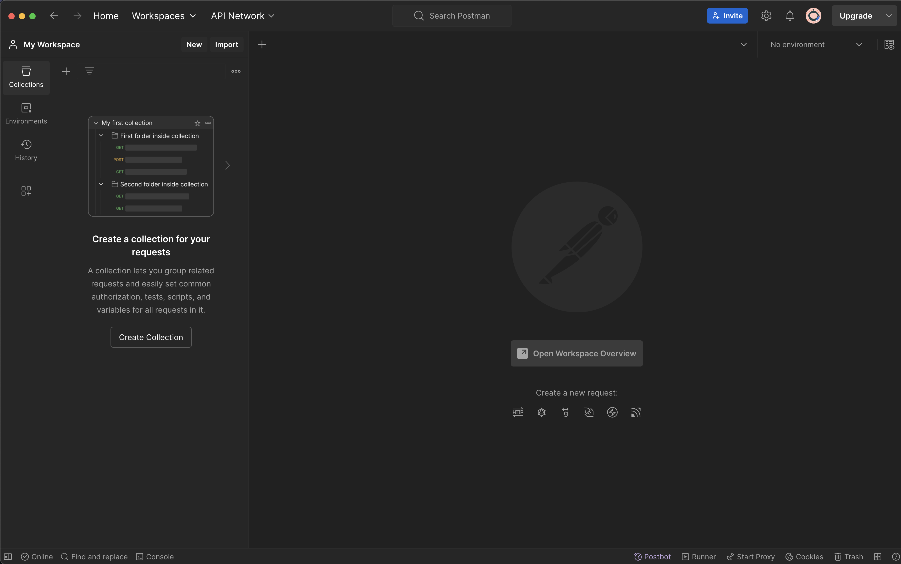 https://learning.postman.com/docs/getting-started/first-steps/creating-the-first-collection/ --- ## Create a request Click on the "+" button to create a new request and for now write a placeholder request URL. I wrote `localhost:8080/api/movies`. --- ## Save request Click on the `💾 Save` button on the top right corner of the request. Give it a name and assign it to the collection. <img src="./assets_postman_monitoring/save_request.png"> --- ## Set variables Highlight the URL and tool tip will pop up with a `Set as variable` button. Click on it. <img src="./assets_postman_monitoring/set_variables.png"> Create a BASE_URL and PORT variable and set the scope to the collection. --- ## Edit variables You can edit variables by clicking on the `...` icon on the upper left side (the collection drawer) and selecting edit. Choose the `Variables` tab and edit the variables. 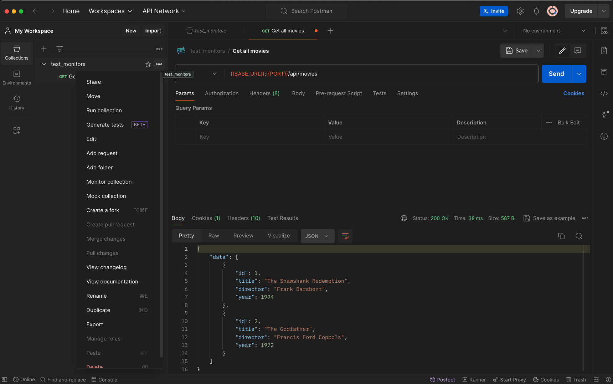 --- ## Create tests On the request page, click on the `Tests` tab: 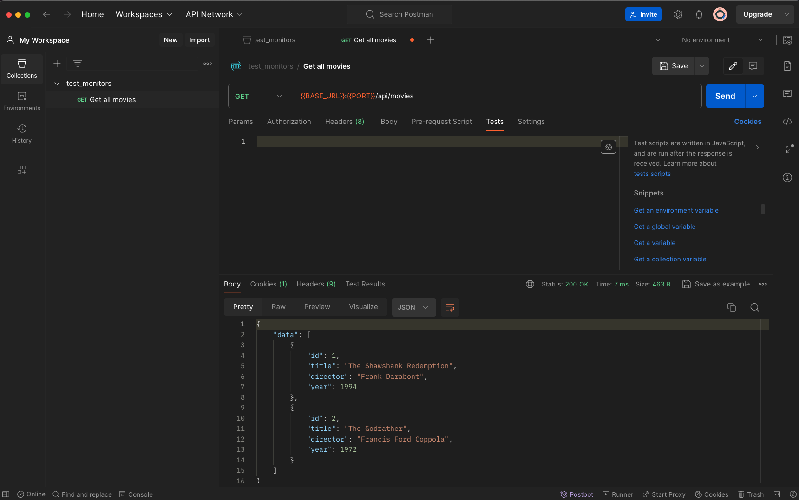 You can optionally watch the API test segment of the video below to learn more: [](https://youtu.be/VywxIQ2ZXw4?t=3772) --- ## Write a test In the snippets on the right side select `Status code: Code is 200`; ```javascript pm.test("Status code is 200", function () { pm.response.to.have.status(200); }); ``` --- ## Run the test Send the request and select the `Test Result` tab in the lower bottom (the response part). 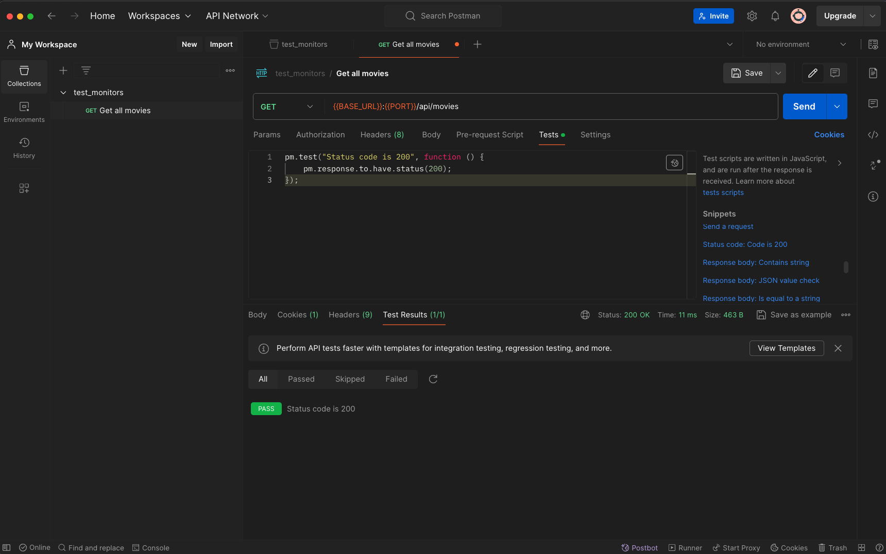 --- ## Improve the test ```javascript pm.test("Status code is 200", function () { pm.response.to.have.status(200); }); pm.test("Response time is less than 200ms", function () { pm.expect(pm.response.responseTime).to.be.below(200); }); pm.test("Response body is present", function () { const body = pm.response.json(); pm.expect(body).to.include("data"); pm.expect(body.data).to.be.an("array"); }); ``` --- <div class="title-card"> <h1>Runners</h1> </div> --- ## Collection runner A runner automates running a collection of requests instead of having to run each of them manually. You can find the runner in the the bottom right corner of the Postman app. 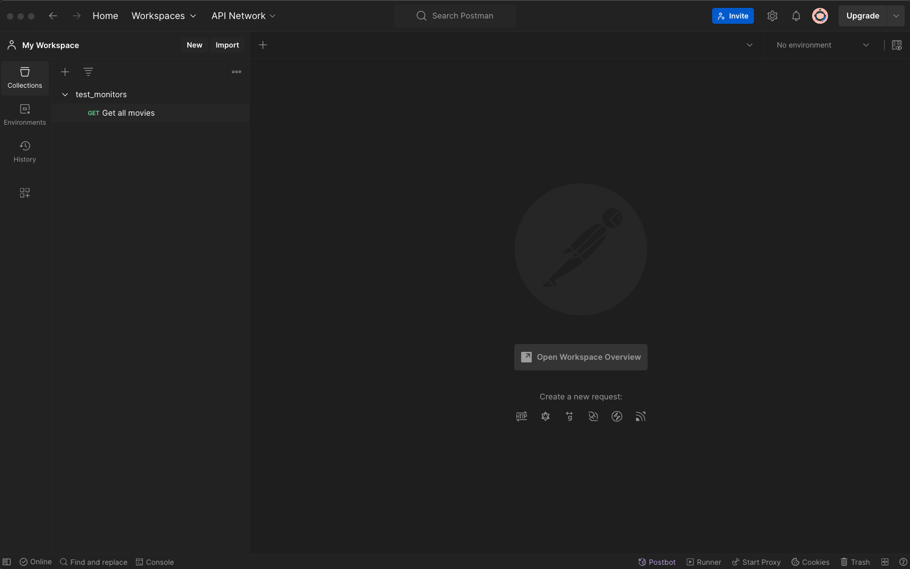 --- ## Adding the collection to the runner Simply drag the collection from the collection drawer to the runner. 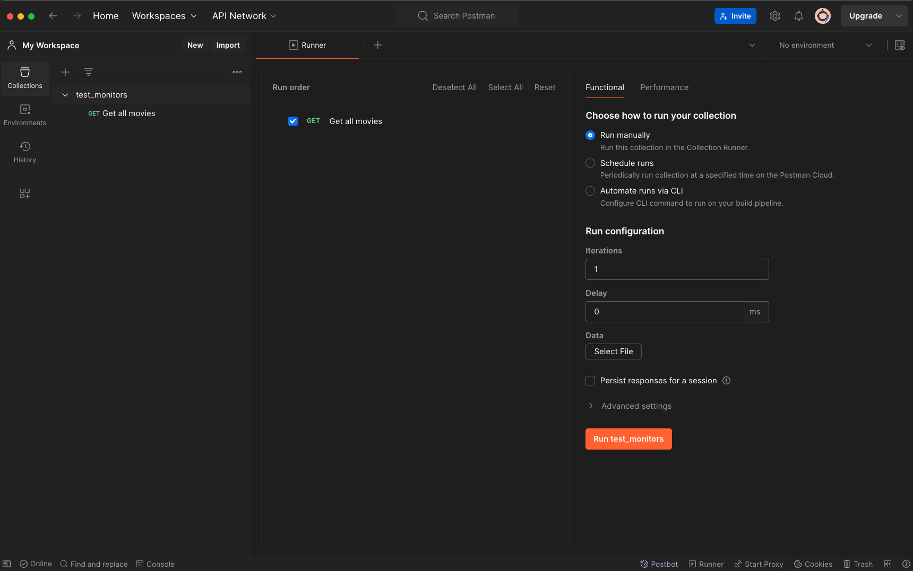 --- ## Run the runner Click on the `Run` button in the runner (bottom right). --- ## Automate Run 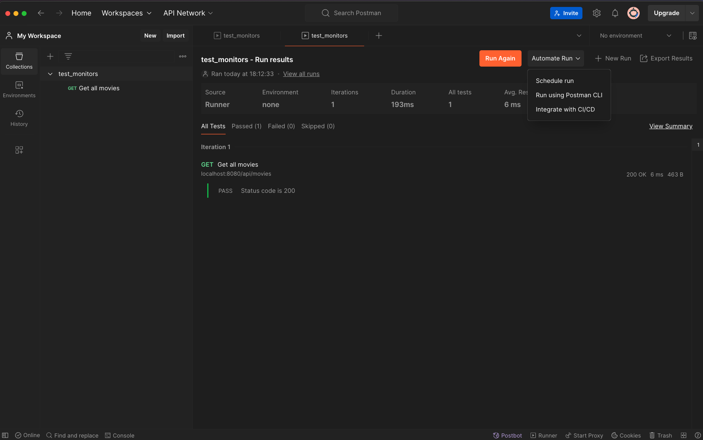 --- # Schedule run You can schedule a run to run at a specific time and send you emails if the tests fail. Postman cloud runs the tests for you and you don't have to setup a server. 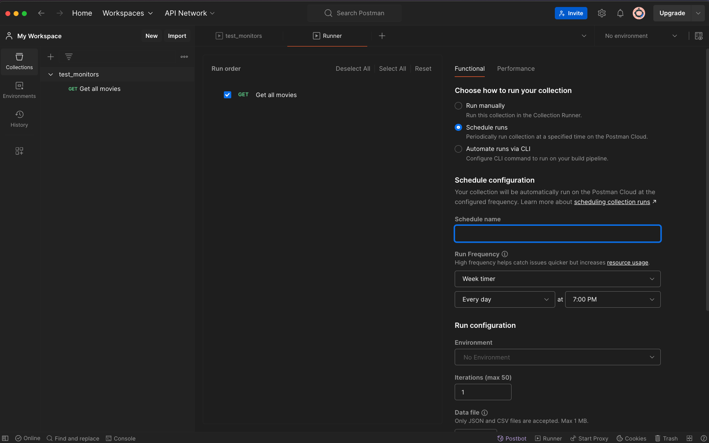 --- ## Schedule CI/CD - I You can run a runner in CI/CD. For instance, you can make test that all the routes are working before deploying to production. Or you could immediately role back in production in case of a failed test. 6 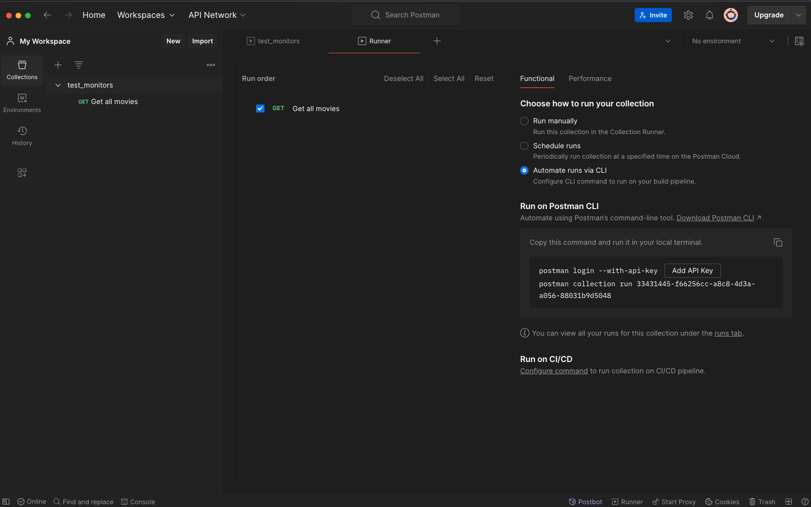 --- ## Schedule CI/CD - II Click on `Configure command` and you will be able to get a snippet and instruction on how to add the code to your CI/CD pipeline. 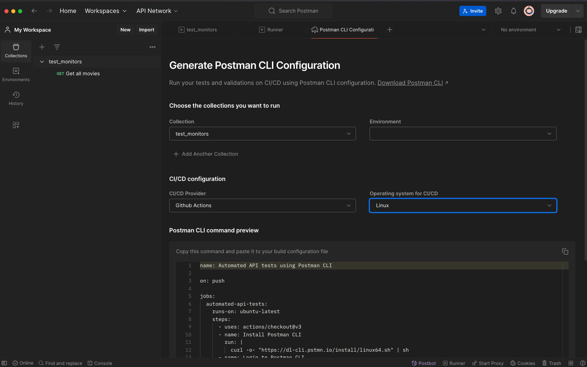 --- # Monitors --- # Enable Monitors Click on the icon below `history` in the left side and enable Monitors. --- ## Create a Monitor Click on `Monitors` on the left sie and selct `Create a Monitor`: <img src="./assets_postman_monitoring/create_a_monitor.png"> Give the monitor a name, select the collection. --- ## Run the monitor 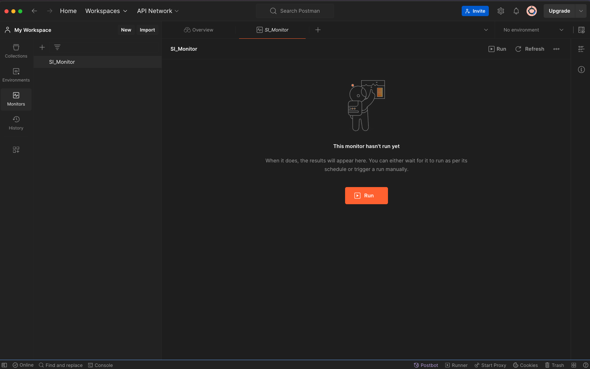 --- ## [Optional] Consider creating a team to enable collaboration https://web.postman.co/purchase?quantity=1&utm_source=postman&utm_medium=app_desktop&utm_term=upgrade&utm_content=navbar Beware that free teams have an account of up to 3 members. It is fine not to create a Postman team and just have one person be in charge of the Postman monitoring. --- ## What now? Now that you have tried to create a monitor for a single test, you can consider writing duplicated tests in `Post-response` for hte collection. https://learning.postman.com/docs/tests-and-scripts/write-scripts/intro-to-scripts/ As an example, if getting a status `200` for all requests is expected then you can put the test as a `Post-response` instead of pasting it onto each endpoint.